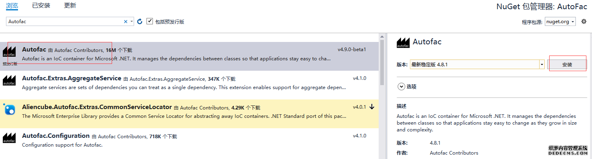
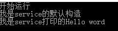
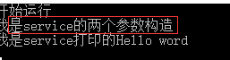
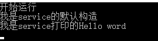
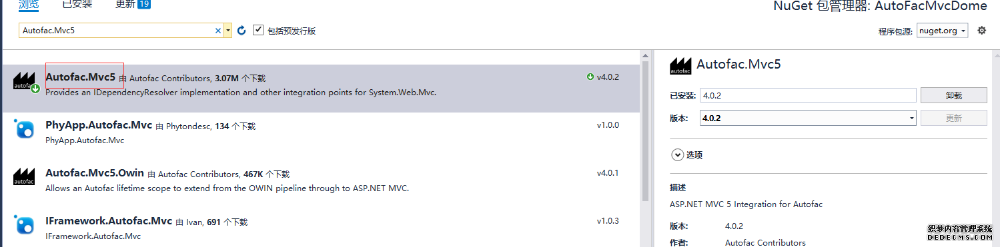
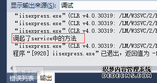

在开始之前首先解释一下我认为的依赖注入和控制反转的意思。（新手理解，哪里说得不正确还请指正和见谅）
控制反转：我们向IOC容器发出获取一个对象实例的一个请求，IOC容器便把这个对象实例“注入”到我们的手中，在这个时候我们不是一个创建者，我们是以一个请求者的身份去请求容器给我们这个对象实例。我们所有的对象依赖于容器提供给你的资源，控制权落到了容器身上。在这里的身份转化或许就是控制反转的核心吧。
依赖注入：我们向容器发出请求以后，获得这个对象实例的过程就叫依赖注入。也就是我们在使用对象前我们都需要先注入也就是这个意思吧。
今天学习了下AutoFac依赖注入这个插件，然后还有以前用过的Unity这个插件简单做个笔记整理。首先我分两个部分记录，第一部分一点有点的记录今天学习的AutoFac这个插件，最后一部分直接补上以前使用Unity插件的代码封装不做详细解释。因为本篇幅写完有点多就单独写一下UnIty。
Unity地址：【Unity】微软的一款依赖注入组件
AutoFac入门
还是放上官网给出的整合流程吧;
- 按照 控制反转 (IoC) 的思想构建你的应用.
- 添加Autofac引用.
- 在应用的 startup 处...
- 创建 ContainerBuilder.
- 注册组件.
- 创建容器,将其保存以备后续使用.
- 应用执行阶段...
- 从容器中创建一个生命周期.
- 在此生命周期作用域内解析组件实例.
创建简单的例子
通过一个控制台简单清晰的介绍了如何使用AutoFac这个插件。
创建项目
创建一个控制台程序叫AutoFacDome。
这里就不做过多解释了，大家都会创建哈哈。
引用Autofac
使用我vs强大的nuget来进行添加引用：
直接在搜索栏输入Autofac直接就可以查找出来：

Nuget命令行：
|
1
|
Install-Package Autofac -Version 4.8.1 |
创建一个依赖关系类：
首先我们定义一个服务接口=>IService

/// <summary> /// 服务接口 /// 描述：为了方法的继承和扩展更好的演示下面的例子 /// </summary> public interface IService { //定义一个输出方法 void PrintWord(); }
然后我们在创建一个服务类去实现接口(IService)=>Service
/// <summary> /// 服务类具体实现 /// </summary> public class Service : IService { //输出方法的实现 public void PrintWord() { Console.WriteLine("我是service打印的Hello word"); } }
好了现在我们有了一个服务接口和一个服务类 ，并且类下面实现了输出会打印：我是service打印的Hello word。常规我们想调用这个方法我们都是在mian函数中示例化该类进行调用，类似于这样
IService service = new Service(); service.PrintWord(); //或者 Service service2 = new Service(); service2.PrintWord();
但是今天我们说的不是这些我们说的另外的方式。那我们看看 autofac是怎么调用的。
注册容器
其实万变不离其宗，不管是autofac，unity，spring.net等，其实都是这么一个套路就是先注册容器然后才能从容器取出，其实这个也非常好理解容器本身是没有东西的，你想用东西就要提前放进去，只有容器有了你请求才会给你。不同的插件只不过是各自的封装方法或者形式存在着差异。autofac的注册方式：
// 创建容器 var builder = new ContainerBuilder(); //注册对象 builder.RegisterType<Service>().As<IService>(); Container = builder.Build();
这个时候我们就相当于把service类放入了容器，这样在后面你才可以取出来使用。
使用容器
这里我写了两个使用的方法根据不同情况使用把：
//使用方法一 using (var ioc = Container.BeginLifetimeScope()) { var service = ioc.Resolve<IService>(); service.PrintWord(); } //使用方法二 //var service = Container.Resolve<IService>(); //service.PrintWord();
运行
我们可以任意注释一个方法来检测一下结果：
这样我们就完成了autofac的简单运用。
AutoFac新手村
通过上面的例子我们已经知道autofac的基本运用。基本运用还不行我们还要知道一些知识。
多构造函数
第一种：就是单纯的有多个构造
如果我们同一个类存在多个构造函数会给我们一个什么结果哪这个在有时候是非常重要的。
所以我们修改我们的service类：
/// <summary> /// 服务类具体实现 /// </summary> public class Service : IService { //默认构造 public Service() { Console.WriteLine("我是service的默认构造"); } //一个参数的构造 public Service(int a) { Console.WriteLine("我是service的一个参数构造"); } //两个参数的构造 public Service(int a,int b) { Console.WriteLine("我是service的两个参数构造"); } //输出方法的实现 public void PrintWord() { Console.WriteLine("我是service打印的Hello word"); } }
其他都不变运行代码：

这里就是执行了默认构造，所有在一个类有多个构造情况下默认的形式是返回给我们默认构造函数的类实例。
第二种：多构造参数类型并且参数类型也注册容器
这个什么意思哪就是说有两个类，其中一个类的构造函数参数是另一个类。并且参数类型也进行注册容器
我们增加一个ServiceTwo类：
public class ServiceTwo :IService { //输出方法的实现 public void PrintWord() { Console.WriteLine("我是serviceTwo打印的Hello word"); } }
修改service类中的一个参数构造为：
//一个参数的构造 public Service(ServiceTwo two) { Console.WriteLine("我是service的一个参数构造"); }
main函数增加注册：
//注册对象 builder.RegisterType<Service>().As<IService>(); builder.RegisterType<ServiceTwo>(); Container = builder.Build();
然后运行：
这里就和上面的结果不一样了，所有在使用时需要注意，autofac官方解释为：当使用基于反射的组件时, Autofac 自动为你的类从容器中寻找匹配拥有最多参数的构造方法。
说白了就是如果使用注册类并且注册类多构造函数，并且其构造参数为其他注册类时候，查找的构造函数包含注册类最多的构造函数返回。
指定构造函数
由容器掌握我们的构造函数总是不好的，所有我们要自己指定想创建谁创建谁=>UsingConstructor（参数类型）可以多个
在这里需要注意我们既然指定了构造函数就要为构造函数传参不然会抱错，参数可以是注册时候传也可以解析时候传，我写了一个解析时候传的：
// 创建容器 var builder = new ContainerBuilder(); //注册对象 builder.RegisterType<Service>().As<IService>().UsingConstructor(typeof(int), typeof(int)); // builder.RegisterType<ServiceTwo>(); Container = builder.Build(); //使用方法一 using (var ioc= Container.BeginLifetimeScope()) { var service = ioc.Resolve<IService>(new NamedParameter("a", 1), new NamedParameter("b", 1)); service.PrintWord(); }
运行结果：

类的覆盖
如果我两个类或者多个类同时实现一个接口并且注册的时候都与接口做了关联。
那么会存在覆盖现象。
下面我们把main函数改造让serviceTwo也注册与IService关联
// 创建容器 var builder = new ContainerBuilder(); //注册对象 builder.RegisterType<Service>().As<IService>(); builder.RegisterType<ServiceTwo>().As<IService>(); Container = builder.Build(); //使用方法一 using (var ioc = Container.BeginLifetimeScope()) { var service = ioc.Resolve<IService>(); service.PrintWord(); }
运行结果：
这个时候我们得到的是serviceTwo类的示例。如果改变Service和ServiceTwo的位置就会返回service实例。
当然我没也可以阻止这个行为使用PreserveExistingDefaults（）方法：
//注册对象 builder.RegisterType<Service>().As<IService>(); builder.RegisterType<ServiceTwo>().As<IService>().PreserveExistingDefaults();
再次运行就不会覆盖：

然后我们如何遍历所有的注册服务哪，使用循环：
using (var ioc = Container.BeginLifetimeScope()) { //var service = ioc.Resolve<IService>(); //service.PrintWord(); var serviceList = ioc.Resolve<IEnumerable<IService>>(); foreach (var item in serviceList) { item.PrintWord(); } }
运行结果：
属性注入
WithProperty：绑定一个属性和他的值
我们给ServiceTwo类添加name属性并扩展一个打印方法：
public string name { get; set; } public void PrintName() { Console.WriteLine($"name属性：{name}"); }
然后main函数改为
builder.RegisterType<Service>().As<IService>(); builder.RegisterType<ServiceTwo>().WithProperty("name", "张三"); Container = builder.Build(); //使用方法一 using (var ioc = Container.BeginLifetimeScope()) { var service = ioc.Resolve<ServiceTwo>(); service.PrintName(); }
运行结果：
方法注入
OnActivating：方法注入
我们在ServiceTwo类添加设置名称方法
public void setName() { name = "李四"; }
然后main函数改为：
builder.RegisterType<ServiceTwo>().OnActivating(e=> {
e.Instance.setName();
});
运行结果：
AutoFac集成-MVC
首先创建mvc项目就不过多解释了。
引用dll：
这里需要引用两个dll文件： Autofac.Mvc5和 Autofac。注意这里我的是mvc5所以我安装的Autofac.Mvc5 这个要根据mvc版本做对应不然会报错。

通过nuget安装就可以了。
相关类
还是我们的Service类和IService类来做示例演示：
/// <summary> /// 服务接口 /// 描述：为了方法的继承和扩展更好的演示下面的例子 /// </summary> public interface IService { //定义一个输出方法 void PrintWord(); } /// <summary> /// 服务类具体实现 /// </summary> public class Service : IService { //默认构造 public Service() { Console.WriteLine("我是service的默认构造"); } //输出方法的实现 public void PrintWord() { System.Diagnostics.Debug.WriteLine("调起了service中的方法"); } }
配置文件
配置Global文件，来注入控制器。下面我只做构造函数注入和属性注入
protected void Application_Start() { var builder = new ContainerBuilder(); // 通过程序集注册所有控制器和属性注入 //builder.RegisterControllers(typeof(MvcApplication).Assembly); builder.RegisterControllers(Assembly.GetExecutingAssembly()).PropertiesAutowired(); builder.RegisterType<Service>().As<IService>(); // 将依赖性分解器设置为AutoFac。 var container = builder.Build(); DependencyResolver.SetResolver(new AutofacDependencyResolver(container)); AreaRegistration.RegisterAllAreas(); FilterConfig.RegisterGlobalFilters(GlobalFilters.Filters); RouteConfig.RegisterRoutes(RouteTable.Routes); BundleConfig.RegisterBundles(BundleTable.Bundles); }
控制器如何使用：
打开home控制器：
public class HomeController : Controller { /// <summary> /// 构造函数注入 /// </summary> /// <param name="serviceClient"></param> public HomeController(IService serviceClient) { this.Service = serviceClient; } public IService Service; /// <summary> /// 属性注入 /// </summary> /// <returns></returns> // public IService Service2 { get; set; } public ActionResult Index() { //使用方法一 Service.PrintWord(); //Service2.PrintWord(); return View(); } }
运行看效果：

自动注册所有控制器（补充）
一个一个的去注册控制是很繁琐的事情，最怕的就是后期修改代码增加了业务却没有及时添加相应的注册而出错，所以我们会全部一次注册，当然这不是必须的只是一种懒人操作。
RegisterAssemblyTypes方法：它会去扫描所有的dll并把每个类注册为它所实现的接口。
我们首先要创建一个接口基类什么都不做只做为注册的类型检测：
/// <summary> /// 注册基类 /// </summary> public interface IDependency { }
然后所以需要注册的接口都继承此类即可：
/// <summary> /// 基类接口 /// </summary> public interface IBaseService:IDependency { /// <summary> /// 插入错误日志数据 /// </summary> /// <returns></returns> int AddErrirLog(); /// <summary> /// 插入登录日志 /// </summary> /// <returns></returns> int AddLoginLog(); }
最后修改Global文件：
var builder = new ContainerBuilder(); // 通过程序集注册所有控制器和属性注入 //builder.RegisterControllers(typeof(MvcApplication).Assembly); builder.RegisterControllers(Assembly.GetExecutingAssembly()).PropertiesAutowired(); //单个控制器注入 // builder.RegisterType<BaseService>().As<IBaseService>(); //集体自动注入 var baseType = typeof(IDependency); var assbembly = AppDomain.CurrentDomain.GetAssemblies().ToList(); builder.RegisterAssemblyTypes(assbembly.ToArray()) .Where(t => baseType.IsAssignableFrom(t) && t != baseType) .AsImplementedInterfaces().InstancePerLifetimeScope(); // 将依赖性分解器设置为AutoFac。 var container = builder.Build(); DependencyResolver.SetResolver(new AutofacDependencyResolver(container));
主要是红色部分